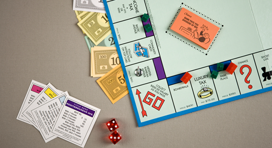

코로나 블루 완전 극복!
대상별 코로나 지원정책 모음ZIP은 BONUS~
알아두면 좋아요!
원인과 증상, 극복방법!
최근 코로나 확진자 수가 대폭 상승하면서 코로나 장기화가 계속 되고 있습니다.
많이 바뀌어버린 일상속에서 대중들의 심리적인 변화도 일어나고 있는데요,
타인과의 접촉이 줄어들고 실내에 머무르는 시간이 길어지면서
‘코로나 블루’ 라는 현상이 나타났습니다.
‘블루’는 우울함을 나타내는 단어이기도 한데요,
코로나 블루, 어떻게 찾아오고 어떻게 극복해야할까요?
코로나 블루?
코로나가 장기화되면서 생긴 신조어인 코로나 블루!
코로나 블루는 ‘코로나’와 우울이라는 뜻을 나타내는 ‘블루’가 합쳐져
코로나 블루라는 신조어가 생겨나게 되었습니다.
WHY?
일상으로의 복귀가 불투명해지고 있는 만큼 그 불안감과 초조함은 더 증폭되고 있기도 하죠.
실제로 우울과 불안을 호소하는 심리 상담 전화도 늘었는데,
확진자가 처음 급증했던 작년 3월에는 1만 4천여 건으로 가장 많았다는 것을 보면
코로나 블루가 정말 많은 사람들이 겪고 있는 현상이라고 생각해 볼 수 있습니다.
코로나 블루 증상
아래 항목 중 5개 이상이 된다거나 1번 항목과 9번 항목 중
하나라도 포함된다면 코로나 블루 증상을 의심해보아야 합니다.
- 1. 하루 중 대부분 우울한 기분이 2주 이상 지속된다.
- 2. 어떤 일에도 흥미나 즐거움이 뚜렷하게 저하된다.
- 3. 특별한 이유 없이 체중이 감소하거나 증가했다.
- 4. 불면증이나 과다 수면 증상이 나타난다.
- 5. 지나치게 초조한 기분이나 무기력한 감정을 느낀다.
- 6. 피로감 또는 활력이 상실됨을 느낀다.
- 7. 죄책감 또는 무(無)가치감을 느낀다.
- 8. 사고력이나 집중력 저하 또는 우유부단한 감정이 지속된다.
- 9. 죽음이나 자살에 대한 생각이 반복적으로 든다.
취미나 여가시간을 가져보세요
일상의 스트레스에서 벗어나 재충전의 시간을 가져보세요.
마음이 힘들어질 때, 극복의 에너지가 된답니다.
주변 사람들과 소통해 주세요

우리는 모두 코로나19의 시대를 살고 있어요.
영상통화, 이메일 등을 통해 가족, 친구, 동료 등 진심을 주고받을 수 있는 사람들과 소통해 주세요.
* 자가 격리자 일반 국민 대상 심리 상담 핫라인 *
1577-0199